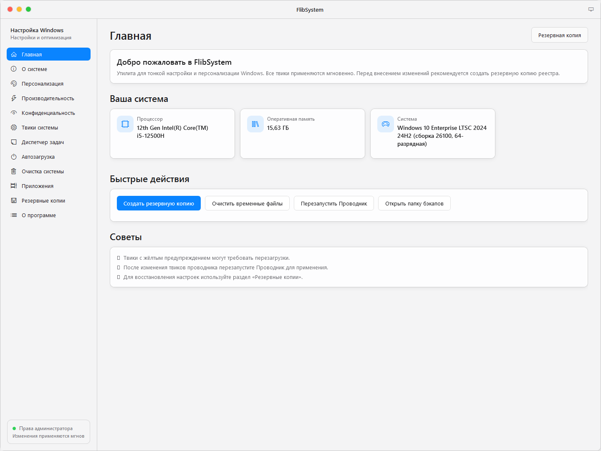
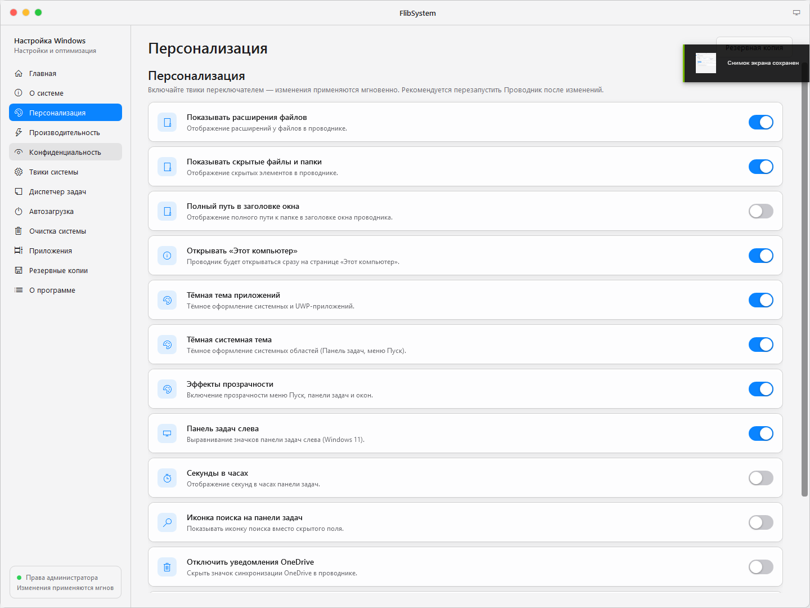
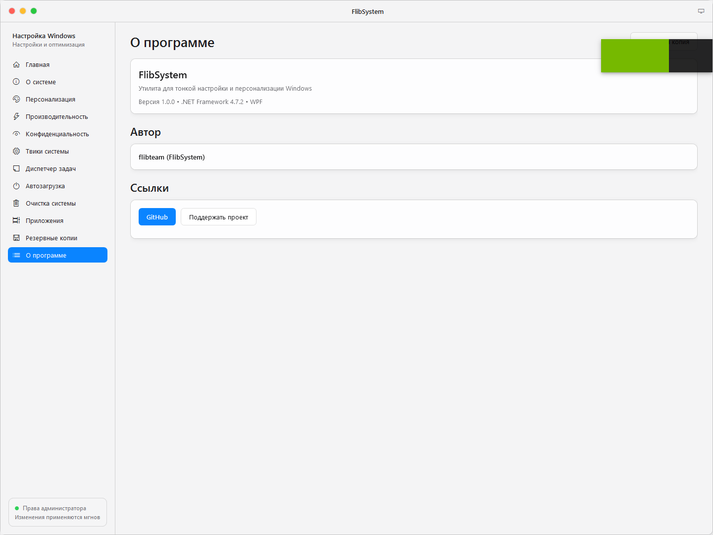
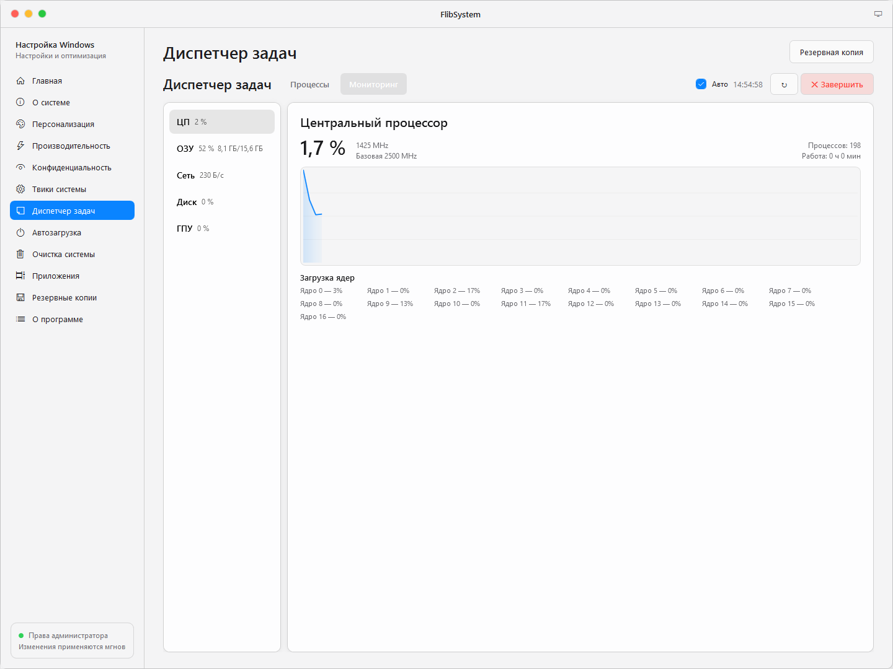

C# / WPF
.NET Framework 4.7.2+
FlibSystem Engine.
Автономный твикер и мониторинг Windows 10/11. Моментальное переключение ключей реестра без перезагрузки системы, встроенный диспетчер задач и полный контроль компонентов.
FLIBSYSTEM.EXE // DIRECT EXECUTABLE
SHA-256 VERIFIED
Core Architecture
Мгновенный отклик реестра
Все параметры Windows (отключение телеметрии, персонализация Проводника, твики контекстного меню и гейм-мода) переключаются напрямую в ветках реестра без задержек. Перед изменением создается снимок реестра на вкладке «Резервные копии».
// Visual Studio MSBuild compilation target
msbuild src\FlibSystem.csproj /t:Rebuild /p:Configuration=Release /p:Platform=AnyCPU
Telemetry & Hardware
Живые графики
Встроенный монитор производительности опрашивает аппаратные датчики в реальном времени: нагрузка на ядра CPU, использование памяти, дисковый I/O, сетевой трафик и видеокарта.

Главная панель и системная сводка
Dashboard

Диспетчер задач и графики
Performance

Переключатели твиков
Registry

Настройки и темы оформления
Appearance